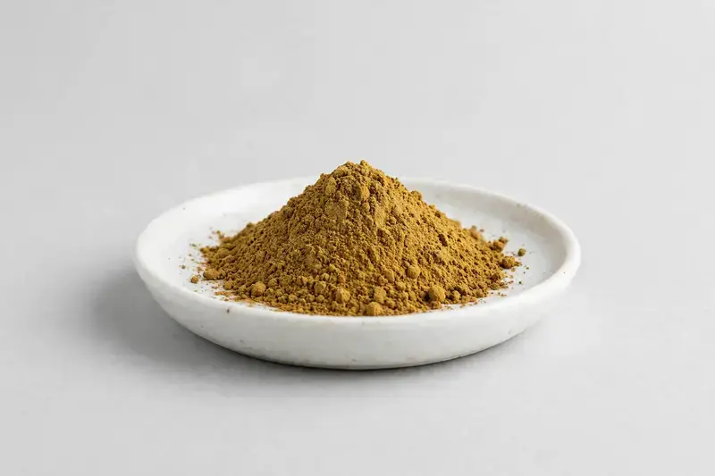

Cassia obtusifolia — a seed extract positioned for herbal-tea and digestive-wellness formulation concepts.

Overview
Cassia Seed Extract is derived from the seeds of Cassia obtusifolia, a plant used in traditional Chinese herbal practice. The extract is commonly traded standardized to anthraquinone content and appears in herbal-tea and digestive-wellness concepts. Demand is steady in Asian-inspired functional beverage and tea categories. HerbChina Extracts is a Xi'an-based trading company sourcing through vetted partner producers; buyers share a target spec and we confirm feasibility honestly before any commitment.
Specifications below reflect commonly requested options in the market — not a stock list. Share your target spec and we'll confirm exactly what we can supply, honestly.
| Specification | Details |
|---|---|
| Botanical identity | Cassia obtusifolia seed extract powder |
| Marker compound | Commonly requested spec grades: standardized to anthraquinone content; ratio extracts such as 10:1 also circulate in the market |
| Appearance | Fine powder, color typical of the extract |
| Mesh size | Typically 80–100 mesh (confirm per inquiry) |
| Testing | COA/TDS arranged on request; scope agreed per your spec |
Applications
Documentation
We don't claim in-house labs or certifications we don't hold. COA and TDS documents can be arranged on request, and testing scope is agreed against your specification before supply.
FAQ
Related products
Phosphatidylserine
Key marker: 20-50% PS
View specs →L-Alpha-glycerylphosphorylcholine
Key marker: 50% / 99%
View specs →L-Citrulline
Key marker: 99%+
View specs →Asparagus racemosus
Key marker: Saponin grades
View specs →Turnera diffusa
Key marker: 4:1 to 10:1 ratios
View specs →Send your target spec and volumes — we'll respond with a tailored quotation.
Request a Quote